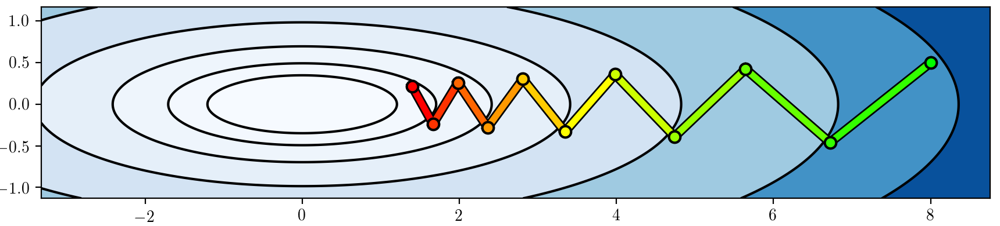

Deep Reinforcement Learning
Advanced Algorithms
Chair of Safe Autonomous Systems, TU Dortmund
Summer term 2026
Ill-conditioned gradients
\[\begin{align*} r_t &= -s_t^2 - a_t^2 \\ \log\pi_\phi\agivenb{a_t}{s_t} &= -\frac{1}{2\sigma^2}(k s_t - a_t)^2 + C, \fragment{ \qquad \phi=(k,\sigma). } \\ \nablaphi\log\pi_\phi\agivenb{a_t}{s_t} &= \begin{pmatrix} -\frac{(k s_t - a_t)s_t}{\sigma^2} \\ \frac{(k s_t - a_t)^2}{\sigma^3} \end{pmatrix} \end{align*}\]

- Optimum: \(\phi^*=(-1,0)\).
- Issue: The gradients do not point towards the optimum for smaller \(\sigma\)!
- The \(\sigma^{-3}\) term blows up.
Closely related to ill-conditioned optimization problems: 
Constraining the ascent direction
- Recall the policy gradient update: \(\phi \gets \phi + \alpha \nablaphi L(\phi)\).
- A natural idea: Constrain the length of our update step!
- Linearization of our optimization problem around \(\phi\) using Taylor series expansion: \[\begin{align*} L(\phi') &= L(\phi) + \sum_{i=1}^n \pdiff{L}{\phi_i} (\phi'_i - \phi_i) + \Oc((\phi' - \phi)^2) \\ &= L(\phi) + (\phi' - \phi)^\top \nablaphi L(\phi). \end{align*}\]
- Constrained optimization of \(\phi'\) along the steepest ascent direction: \[\phi' \gets \arg\max_{\phi'} (\phi' - \phi)^\top \nablaphi L(\phi) \qquad \fragment{ \text{subject to}\qquad \norm{\phi' - \phi}^2\leq \epsilon. } \]
- But: We just saw that some parameters change probabilities a lot more than others!
Source: (Peters and Schaal 2008)
- Alternative: Rescale the gradient so that this does not happen!
- A better way to constrain the update distance: The change in distribution via the Kullback-Leibler (KL) divergence! \[ \KLdiv{\pi_\phi}{\pi_\phi'}. \]
Aside: KL-divergence and Fisher information matrix (1)
- The Kullback-Leibler divergence (or KL divergence) measures the “distance” between two distributions (e.g., \(p(x)\) and \(q(x)\)) \[ \KLdiv{p}{q}= \begin{cases} \sum_{x\in\Xc} p(x) \log\cbracket{\frac{p(x)}{q(x)}} & \text{if}~\Xc~\text{is finite} \\ \int{\Xc} p(x) \log\cbracket{\frac{p(x)}{q(x)}}\dx & \text{if}~\Xc~\text{is continuous} \end{cases}. \]
- It is zero if and only if \(p(x) = q(x)\).
- Intuition: Imagine you have two different maps of the exact same city.
- Map A is completely accurate. Every street, etc., is exactly where it should be.
- Map B was drawn from memory by a friend. It’s mostly right with some minor flaws.
- If you use Map B to navigate the city, you are going to make some mistakes.
- The KL divergence answers the question: “How much extra ‘gas’ (or information) will I waste if I use Map B instead of Map A?”

- KL Divergence measures the surprise or unfair penalty you get when you use \(q\) to predict something that actually follows \(p\). If \(q\) is a perfect match for \(p\) (i.e., \(q=p\)), your surprise is zero. The worse your guess (\(q\)) is, the higher the KL divergence.
- Question: What happens if our “model” \(q\) is absolutely certain that something is not going to happen (\(q(x)=0\) for some \(x\))?
Natural policy gradient
- We have now defined a policy gradient whose update length is constrained in terms of the KL divergence: \[\begin{equation} \phi' \gets \arg\max_{\phi'} (\phi' - \phi)^\top \nablaphi L(\phi) \quad \text{subject to}\quad (\phi'-\phi)^\top F (\phi'-\phi). \label{eq:Adv_Natural_PG} \end{equation}\]
- What remains is the question of solving \(\eqref{eq:Adv_Natural_PG}\).
- Without going into further details (e.g., (S. M. Kakade 2001; Peters and Schaal 2008))
\(\Rightarrow\) Solution: scale the policy gradient by the inverse Fisher information matrix, \[\phi \gets \phi + \alpha F^{-1} \nablaphi L(\phi).\] - Intuition behind the inverse FIM \(F^{-1}\):
- Parameters with a high impact have high Fisher information.
- Scaling by the inverse “normalizes” the individual impacts.
- This techinque is known as the natural policy gradient (also covariant policy gradient).
- Preconditioning steps of this type are very common in optimization in general.
- Drawback: \(F\in\R^{d \times d}\) can be very expensive to calculate (and invert) for very large parameter vectors.